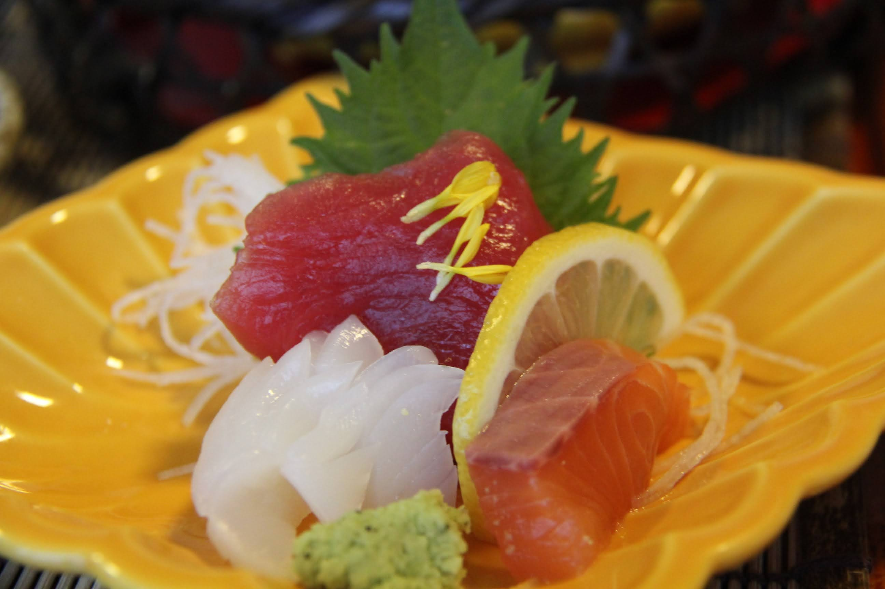

As we traveled to 成田国際空港 from Seattle-Tacoma airport, I was excited to return to Japan.
Hoping to learn directly from the Japanese, the secret to their manufacturing prowess.
The company was situated in a small town in the Shizuoka Prefecture (静岡県), about 240 km from Tokyo.
Their forte was extruding small plastic tubes used in medical applications.
Particularly, they developed a method of co-extruding dissimilar materials.
We were there to learn the extrusion process1.
We followed a modified training plan.
The Japanese team proposed a 18 month schedule.
The US Team countered with a 6-week plan.
We agreed on the plan closer to 6 weeks.
At the conclusion of training in Japan, I realized their approach.
The secret turned out to be hard work and meeting the target.
No need to consider tolerance, just meet the specification.
This approach also translated into punctuality.
I had heard about the remarkable timing of 新幹線. However, I was not prepared for the punctuality of the local Tokaido (東海道) Line.
The train operator posted a printout of the schedule. The schedule had arrival and departure times for each stations, down to seconds. Prominently displayed next to the schedule was an analog-stop-watch like timer.
With these tools and other built in controls, the operator guided trains, within seconds of the posted schedule.
The other manifestation meeting the target was 懐石2
Incredible display of arrangement that rivals flower arrangements. Each guest would have an exact copy of the menu item.

One area where tolerance trumped target was in human relations. Specifically, allowing guests, or in my case, foreign guest some room to make mistakes.
Although I had prepared myself for the role and had read up on business etiquettes, I am sure I made the locals uneasy at times.
However, good naturedly they forgave and carried on. Urging me to understand more and do better on the next visit.
It was a lesson in how to treat your customer like Gods rather than Kings.
A story is told via YouTube.
A US delegation made repeated trips to Toyota to learn about their Manufacturing System. US team repeatedly asked for demonstration of same concepts. Toyota people kindly told US visitors.
Instead of learning how we do things, why don’t you come up with solutions that meet your needs.
See Kata. https://www.youtube.com/watch?v=\_es3hYCMMmc
Need to learn but establish my own and walk that path that leads to enlightment in this life.
Marketing will continue to sell things
In life, when is it we are crossing the line,
A little enhancement or lot of enhancement
Early in life, go for the maximum
Now later in life, no longer need the best.
Just enough to do the job and maybe a little extra
Not the loudest speakers or deepest bass but enough sound
Perhaps combine several small radios to match one big speaker
Transition from maximum level to minimum level that satisfies.
That is what is the minimal sound level that I can detect rather than what is the maximum level before distortion kicks in.
Appendix
The Shinkansen, Japan’s high-speed train network, is renowned for its exceptional punctuality. On average, Shinkansen trains have a delay of less than one minute. Here are some key points highlighting their punctuality:
- Average Delay:
- The average delay of Shinkansen trains is usually measured in seconds. In recent years, the average delay has been reported to be around 20 seconds.
- On-Time Performance:
- Shinkansen trains maintain an on-time performance rate of over 99%. This means that almost all trains arrive and depart on time.
- Reasons for Punctuality:
- Advanced Technology: The Shinkansen system uses advanced signaling and train control technologies to ensure precise scheduling.
- Dedicated Tracks: Shinkansen trains run on dedicated tracks, separate from conventional rail services, reducing the risk of delays due to congestion or conflicts with other types of trains.
- Efficient Operations: The entire operation, from train maintenance to station management, is optimized for efficiency and punctuality.
- Strict Schedules: Timetables are meticulously planned, and train staff are highly trained to adhere to these schedules.
- Impact of Delays:
- Even minor delays are taken seriously, and there are measures in place to quickly rectify any disruptions. When delays do occur, they are often quickly communicated to passengers, and compensation measures may be implemented.
The exceptional punctuality of Shinkansen trains is a testament to the efficiency and reliability of Japan’s high-speed rail system.
Footnotes
Plastics extrusion is a normally high volume manufacturing process where a polymer material, enriched with the desired additives, is melted and formed in a continuous process. The raw material (polymer) in the form of granulates, is gravity fed into the hopper and through the feed throat, drops on a rotating screw. https://www.twi-global.com/technical-knowledge/faqs/plastic-extrusion#:~:text=Plastics%20extrusion%20is%20a%20normally,drops%20on%20a%20rotating%20screw.↩︎
https://ja.wikipedia.org/wiki/%E6%87%90%E7%9F%B3?oldformat=true↩︎